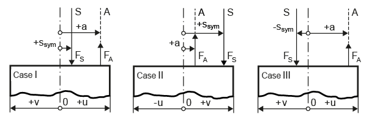

|
|
|


偏心载荷/夹紧的距离

图 42.5：偏心夹紧情况下可能的载荷情况
如图所示，夹紧实体 0 - 0 的重心轴确定了距离的零点。载荷作用线 A - A 与形心轴 0 - 0 之间的距离始终为正。螺栓轴 S - S 与重心轴 0 - 0 之间的距离 ssym 在螺栓轴 S - S 和载荷作用线 A - A 位于重心轴 0 - 0 的同一侧时设为正。否则，该值为负。
尺寸 u 定义了从形心轴 0 - 0 到首次出现张口处的距离。在情况 I 和 III 中，这是到右侧的距离，但在情况 II 中是到左侧的距离。在情况 I 和 III 中，u 必须为正，而在情况 II 中必须为负。这里应用了 VDI 2230 第 1 部分中规定的符号使用准则。
Distances for eccentric load/clamping
Figure 42.5: Possible load cases in the case of eccentric clamping
As you can see in the figure, the axis of the center of gravity of the clamping solid 0 - 0 determines the zero-point of the distances. The distance between load line of action A - A and the centroid axis 0 - 0 is always positive. The distance ssym between the bolt axis S - S and the axis of the center of gravity 0 - 0 is set as positive if the bolt axis S - S and the load line of action A - A lie on the same side of the axis of the center of gravity 0 - 0. If not, this value is negative.
The dimension u defines the distance from the centroid axis 0 - 0 to the point at which gaping first occurs. This is the distance to the right-hand side in cases I and III, but the distance to the left-hand side in case II. In cases I and II, u must be positive, and in case II it must be negative. The guidelines governing the use of signs specified in VDI 2230 Sheet 1 are applied here.